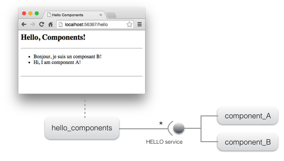
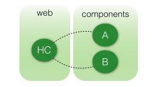
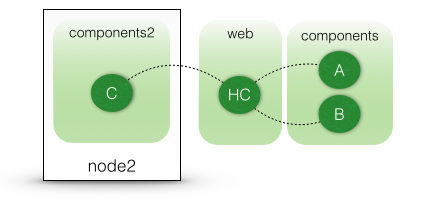
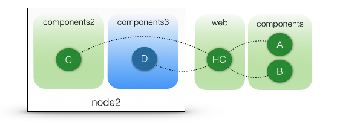

Home > Documentation > Tutorials
Getting started tutorial
Overview
As a COHORTE user, you need to have Java ( >= 1.6 ) and Python ( >= 3 ) installed on your system. Next, you need to download and install COHORTE on your system.
The objective of this getting started tutorial is to get you familiar with the COHORTE concept as quickly as possible. There is no need to start coding at this step. You found other advanced tutorial in the tutorials section of the documentation page. This getting started tutorial is divised in four steps:
- STEP 1: creating a simple application on one node, but two seperate isolates.
- STEP 2: using two distributed nodes to host the same application (without changing the components implementation code).
- STEP 3: using a mixture of Java and Python components.
- STEP 4: crash-test
STEP 1
- Open a new terminal and type the following command on your working directory:
$ cohorte-create-node node1
This command will create a new directory named node1 containing an executable run (which launches the created COHORTE node) and two folders conf (contains configuration files) and repo (contains components bundles).
- Download the bundle of this tutorial’s components (no need to implement them in this getting started tutorial).
- Put the extracted
hellodirectory intonode1/repodirectory.
- The
hellopackage contains four components (implemented in Python):
- component_A, component_B, and component_C: these components implements the HELLO service which has only one method
say_hello. - hello_components: this component provides a web interface on which the list of discovered components implementing the HELLO service are listed (we show the message returned by each component when calling their
say_hellomethod).
- component_A, component_B, and component_C: these components implements the HELLO service which has only one method
- The
The following picture depicts the web interface provided by the hello_components component and the underlying architecture of the application.

- In this first step of the tutorial, we want to instantiate only the components HC (hello_components), A (component_A) and B (component_B). In addition, we want to seperate between HC component and the other components providing the HELLO service (which can contain third-party code). COHORTE supports this separation by using Isolates. Isolates are a seperate process with all the needed runtime infrastructure allowing the execution of the managed components.
The following picture depicts the desired resilient architecture. If one of the components providing the HELLO service fails, there will be no impact on the HC component!

- In order to have this deployment plan, you should edit the
node1/conf/autorun_conf.jsto specify the set of components that will be instantiated on each isolate.
{
"name" : "default-application",
"root" : {
"name" : "default-application-composition",
"components" : [
{
"name" : "HC",
"factory" : "hello_components_factory",
"isolate" : "web"
}, {
"name" : "A",
"factory" : "component_a_factory",
"isolate" : "components"
}, {
"name" : "B",
"factory" : "component_b_factory",
"isolate" : "components"
}
]
}
}- It’s done! all what’s you need to do now is to start
node1node as follow:
$ ./run -t
You will notice some log outputs, when all is Ok, type the load command to start the application’s composition:
$ loadStarted composition: default-application -> b764f5eb-812c-4a2a-83f8-b3effa1e86ce
- To test your application, you need to know on which http port the
webisolate is listening (as the HC component publish its web page using the same HTTP server as its isolate container). Type thehttpcommand to have this information.
$ http+------------+--------------------------------------+-----------+--------------------------------------+-------+ | Name | UID | Node Name | Node UID | HTTP | +============+======================================+===========+======================================+=======+ | components | 9fa3c812-64b0-499e-8b65-6ac5fe8bcf02 | node1 | 71c96fe6-5ce2-43c9-bafc-6f0905d8cf74 | 63625 | +------------+--------------------------------------+-----------+--------------------------------------+-------+ | web | ac0dd576-a7fb-4c34-b7ab-b68a810c38bc | node1 | 71c96fe6-5ce2-43c9-bafc-6f0905d8cf74 | 63609 | +------------+--------------------------------------+-----------+--------------------------------------+-------+
In this case, its 63609. Launch a web browser with this address to start the web interface: http://localhost:63609/hello.
You can fix the http port to use for your application using configuration files (see startup section of the documentation page).
- To stop COHORTE, type the
quitcommand on the terminal.
Step 2
In this second step, we will distribute our components among two nodes (which can be physically distributed on a local network area - or via Internet using an XMPP server).
- Lets have the same architecture as the first step, and we add a new instance of component_C that should be deployed on a second node.
Here is the new depoyment configuration for this case.

COHORTE will instantiate the HC, A, and B components on Top Composer node. The component C is instantiate on each other node having the name “node2”. This node can be located on another machine than the one executing the Top Composer.
In order to discover the nodes belonging to the same application, all the nodes should have the same application-ID. The following commands creates two nodes (node1 and node2) with the same application-ID hello-application-step2:
$ cohorte-create-node node1 hello-application-step2 $ cohorte-create-node node2 hello-application-step2
- Copy
hellopackage used in the first step into the `repo directories of the two newly created nodes (you can also make symbolic links to avoid having two copies if your nodes are on the same machine). - Update
autorun_conf.jsfile located onnode1/confas follow:
{
"name" : "hello-application-step2",
"root" : {
"name" : "hello-application-step2-composition",
"components" : [
{
"name" : "HC",
"factory" : "hello_components_factory",
"isolate" : "web"
}, {
"name" : "A",
"factory" : "component_a_factory",
"isolate" : "components"
}, {
"name" : "B",
"factory" : "component_b_factory",
"isolate" : "components"
}, {
"name" : "C",
"factory" : "component_c_factory",
"isolate" : "components2",
"node" : "node2"
}
]
}
}The C component is specified to be in another isolate named "components2", not "components". In the actual version of COHORTE you can not have two different isolates with the same name in two different nodes!
-
Remove the generated
autorun_conf.jsfile located onnode2/conf. Indeed,node1will be considered as Top Composer, it will controls the application’s composition in all the participating nodes. -
Go to
node1directory and start it as a Top Composer:
node1$ ./run -t
- When started, type
loadcommand to start the application’s composition (instantiation). -
You can test this first part of the application as your
hello_componentscomponent is instantiated in this node (web isolates). Follow the same steps as in the first part of this tutorial to find the http port and to launch the web interface. You notice that there is only two components A and B. This is because C component is specified to be instantiated onnode2which is not yet started. - In a separate terminal, start
node2with a different http and remote shell ports (to avoid conflict with the first node - as they are hosted on the same physical machine):
node2$ ./run 9000 9001
Notice that we have started this node without the -t option. It is not a Top Composer, but just a participating node.
- Refresh the web interface of
hello_componentscomponent. You will notice that the C component is detected and used by the HC component even it was deployed in a seperate remote node.
Step 3
All the components used until now are implemented in Python (using iPOPO component-based framework). We will extend our application by introducing a new component that implements the HELLO service in Java (component_D).
- Stop the running nodes of the previous step (use the command
quit). - Donwload the bundle (jar file) containing the implementation of the D component.
- Put the extracted
jarfile into therepofolder ofnode2node. - Update the
autorun_conf.jsfile located onnode1/confto add this new component D. It should be instantiated onnode2.
{
"name" : "hello-application-step2",
"root" : {
"name" : "hello-application-step2-composition",
"components" : [
{
"name" : "HC",
"factory" : "hello_components_factory",
"isolate" : "web"
}, {
"name" : "A",
"factory" : "component_a_factory",
"isolate" : "components"
}, {
"name" : "B",
"factory" : "component_b_factory",
"isolate" : "components"
}, {
"name" : "C",
"factory" : "component_c_factory",
"isolate" : "components2",
"node" : "node2"
}, {
"name" : "D",
"factory" : "component_d_factory",
"isolate" : "components3",
"node" : "node2"
}
]
}
}
-
As you notice, components C and D should be deployed on two sperate isolates (components2 and components3) as are implemented in two different languages.
- start the two nodes as explained in the previous step (node1 as Top Composer and node2 as a simple node with different http and remote shell ports).
- Test the web interface. You will find that the D component which is implemented in Java is also used by the HC component, implemented in Python.
Step 4
crash-test! Work in progress..
Home > Documentation > Tutorials
Previous Next